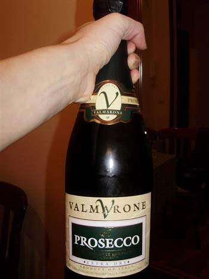

Prosecco, Paris Hilton i Srbija
torek, 14. april 2009. u 10:48 AM
Piše: La Lara
Rubrike: Gastronomija/Enologija | Lifestyle | Tabloid Buzz
 Današnji Blic objavljuje:
"Iako se Paris Hilton čak i gola skinula da bi promovisala šampanjac „Rich Prosecco”, projekat je potpuno propao, a da sve bude zanimljivije 30.000 limenki ovog šampanjca se, kako navodi londonski „San”, nalazi u skladištu u Srbiji i čeka aukciju za potencijalne kupce koji se verovatno neće otimati za piće kojem rok upotrebe ističe u maju.(...)
U martu prošle godine, na sva zvona je najavljen dolazak Paris Hilton u Srbiju. Naime, ona je trebalo da u sklopu promotivne kampanje nakon Kine i Indije svrati u Srbiju i ovde se zadrži dva dana, međutim, od toga nije bilo ništa. Suočeni sa činjenicom da zalihe šampanjca propadaju u nekom srpskom skladištu, vlasnici su brže bolje angažovali aukcijsku kuću iz Stokporta koja će uskoro šampanjac ponuditi zainteresovanim kupcima. Doduše, sumnjamo da će biti mnogo zainteresovanih - em će šampanjac uskoro da „zakisi”, em na aukciji mogu da učestvuju samo kupci koji nameravaju da kupe najmanje 5.000 konzervi... "
Imam ideju: Da Vlada Srbije, u okviru programa prevazilaženja krize, otkupi ovu količinu i podeli građanima za predstojeće praznike.
Drugi predlozi i opseracije:
- Prosecco nije šampanjac, kako Blic tvrdi, već penušavo vino. Jeste slično, ali nije isto.
- U našim prodavnicama to piće (mešavina proseka sa voćnim aromama) prodaje se po ceni od oko 250 din za konzervu od 0,2 l što je zaista previše (tj. bezobrazno). Za tu količinu, pa još u konzervi.
- Na severu Italije, u regiji Veneto, odakle prosecco potiče i gde sam jedne godine provela nekoliko meseci, ovo piće se prodaje po vrlo povoljnim cenama i njime se počinje bilo koji izlazak. Na primer, veće društvo se dogovori za izlazak, nalaženje je zakazano u nekom baru, dok se svi skupe (a to sa Italijanima ume da potraje) pije se proseko i jednu neke gricaklice (sendivičići slično), pa se onda negde ide. Piće stvara happy-go-lucky raspoloženje tako da se u veče uđe na pravi način.
- U nekim privatnim prodavnicama može se naći pristupačan prosecco, ja sam ga kupovala po 370 din, ovog februara bila je vrlo merry girls' party sa proseccom koji je tekao u potocima, kako bi to rekli storiglori časopisi. Uz to, bruskete sa plodovima mora i tiramisu. Mogu samo reći: Mmmmmmm. I još da Italijani obično znaju kako da ne preteraju, a mi nekad i ne.
 RSS feed
RSS feed
 sadržaji se objavljuju pod
sadržaji se objavljuju pod {kind=link}
Komentari
Secas se mog proseka sa sokom od zove? Kako je to bilo dobro! A tek sampanjac sa sokom od brusnice? MMMMM!
FeistyPreggo | 15.04.09 07:35
Aha. A secam se i do cega je doveo taj prosecco sa brusnicom
LLara | 15.04.09 10:30
pa jeste, doveo je. hihihi!
feisty | 24.04.09 18:36